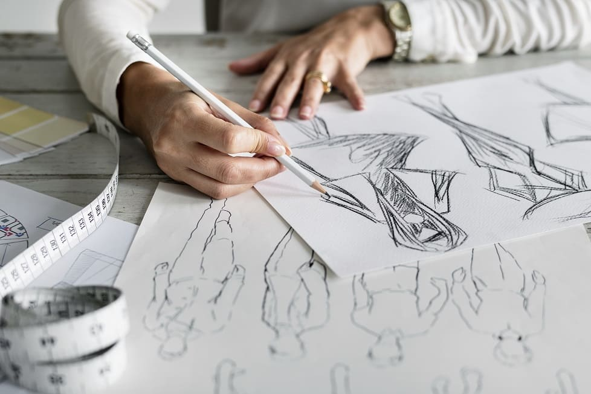

Bienvenido a mi pagina web, yo soy Bernardo Gaspar Ibarra del grupo 52 de la materia de Fundamentos de Desarrollo Web y a continuacion les mostrare algunos de mis pasatiempos que me gusta hacer cuando tengo un rato libre.
* Practicar deportes
Practicar al futbol es el pasatiempo que mas me gusta hacer por las tardes cuando ya he terminado de hacer las tareas de la universidad. Otros deportes que me gusta practicar son el boxeo y el futbol americano.
* Escuchar musica
Este pasatiempo es otro de mis favoritos que hago en casi para cualquier momento como cuando voy en el camion hacia la facultad o hago tareas del hogar. Mi genero favorito es el rock en español.
* Ver peliculas o partidos de futbol
Este pasatiempo lo suelo hacer los fines de semana cuando hay partido de los Tigres o se reune toda la familia y asi pasar un buen rato.
* Practicar dibujo
Dibujar se ha convertido en uno de mis pasatiempos favoritos recientemente y combinarlo con escuchar la musica que me gusta hace que no solo pase el tiempo si no que tambien me libera de estar estresado y del aburrimiento.
